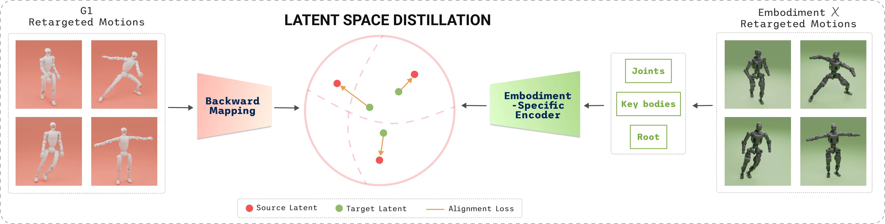
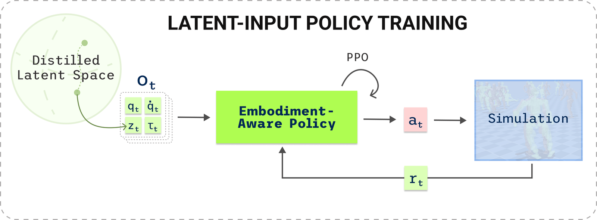
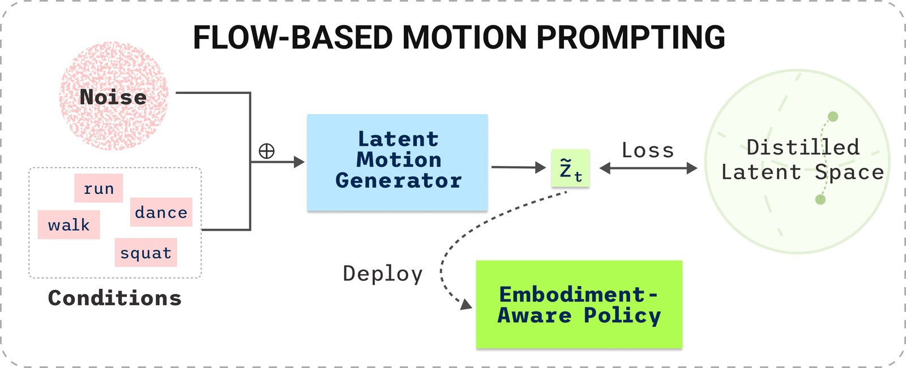

TL;DR — A behavior foundation model's latent space, not its policy, is the transferable asset. CrossBFM freezes one humanoid's Forward–Backward latent as a shared behavioral coordinate system and distills it onto new bodies with a supervised fit, recovering all three BFM prompting modes — tracking, goal reaching, and reward optimization — on bodies that never ran unsupervised RL.
Behavior foundation models (BFMs) give a humanoid a single promptable policy over a latent behavior space. Unsupervised reinforcement-learning frameworks such as BFM-Zero introduce a compact, interpretable latent space that enables zero-shot whole-body tracking and reward optimization — promising results, but ones that cost enormous compute even on relatively small datasets. Retraining that latent space for every other embodiment is therefore expensive, while behaviors ought to be shared across robots in the first place. We close this gap with CrossBFM, which treats the latent space as a transferable asset across embodiments. First, we introduce a latent distillation formulation that freezes a source latent space as a shared behavioral coordinate system and regresses onto it from a target robot's proprioception, via the cross-embodiment motion correspondence that retargeting already supplies — requiring neither a simulator nor RL on the target. In this formulation an embodiment-specific encoder is fit by a single frame-wise cosine regression onto the frozen source latent, which converges in under an hour on one GPU against the 103 GPU-hours that produced the source's backward map. Second, we train latent z-only trackers that observe [z | proprio] with no reference trajectory at inference, so that one latent from a reference motion — or equivalently one latent inferred by a flow-based planner trained on the target latent space — serves as the policy command. Third, because the encoder approximates a backward map, the closed-form reward projection of Forward–Backward models runs entirely target-side over cached frames, with thresholds transported through the two feature marginals — so reward prompting needs neither a simulator nor a target-side FB model.
We validate the pipeline on three morphologically distinct humanoids, observing that the distilled latent matches its reference-fed upper bound to within 0.025 rad joint MAE without falls, reaches goals smoothly via latent interpolation, degrades by only 5% when using just a quarter of the original dataset for distillation, and completes 41 source task rewards — covering all three prompting modes of BFM-Zero without unsupervised RL.
CrossBFM freezes a source BFM on the Unitree G1, treats its 256-dimensional FB latent as a fixed behavioral coordinate system, and distills it onto new humanoids. Because every clip is retargeted to every robot along the same timeline, the cross-embodiment correspondence that ordinarily has to be learned is resolved for free, and latent transfer reduces to a supervised fit.

The same clip is retargeted independently to every robot along one timeline, so frame i means the same instant on every body and the encoder Er is a supervised regression from one robot's proprioception onto a latent a different robot produced. The training objective is given by:
A frame-wise cosine regression, with the projection applied at the output so every prediction lands on the sphere of radius √d that the tracker expects. Over a window of H = 64 frames the encoder reads, per frame, joint positions and velocities, root height, rotation and linear velocity, and key-body positions; Er is a 4-layer bidirectional pre-LN Transformer.
Trained over cached source latents, it converges in under an hour on a single consumer GPU — against the 103 GPU-hours, expert buffer, and discriminator that produced BS for one body. In FB the backward map is defined through successor measures, a dynamical object; the difficulty turns out to lie in the correspondence rather than the dynamics and is addressed with motion retargeting. Encoders and trackers are thus per embodiment and cheap, while the space they map into is fully reusable.

Stage 2 — latent-conditioned policy
Each embodiment receives a tracker trained with PPO whose actor observes the latent with proprioception alone, including base angular velocity, IMU roll and pitch, joint positions and velocities, the last action. The critic stays asymmetric, keeping privileged reference observations available in simulation and discarded at deployment.

Stage 3 — flow-based prompting
Because z is shared across embodiments, one generative model over latent trajectories serves every robot and prompting no longer needs a retargeted reference at all. We train a rectified-flow model over latent chunks conditioned on a behavior mode or text embedding, the preceding latent frames, and optional motion features. expect.
Tracking and goal reaching follow from the encoder and the policy. Transferring the source's rewards does not — and it is the third of the three modes an FB model is supposed to answer. An FB model answers a reward prompt in closed form: for a reward r over states drawn from ρ, the optimal latent is a reward-weighted projection onto the backward map,
so that Q under that latent is maximized with no retraining. Since Er reproduces projZ(BS(·)) through the retargeting correspondence, substituting the encoder for BS and the robot's own corpus for the state buffer makes the whole projection target-side — at a cost of cos ≥ 0.995 against the latent BS yields on the frame-aligned source states.
Every shared feature is a function of cached key-body kinematics, so neither a replay buffer nor a simulator is needed to answer the prompt. Concretely: encode the all the frames of LAFAN once with Er over 64-frame windows, evaluate each task reward on the stored features without restoring any state, and return the weighted projection at τ = 10, held constant as the prompt to the policy.
However, differences in kinematics make some absolute configurations unreachable for a target robot — an arm reach a shorter arm cannot achieve — so a threshold that means “arms raised” on the G1 need not mean it on T1. We therefore transport each threshold through the two feature marginals, θ(r) = Φr−1(ΦS(θ)), with margins scaled by the p5–p95 span ratio, which restores what the source's task meant on a differently proportioned body.
Setup. We validate our pipeline with 3 morphologically distinct humanoids varrying in DoF count, body count, joint topology, and joint ordering; while sharing the LAFAN timeline of 40 motions and 264,625 frames. We keep whole motions instead of sampled frames for validation test.
Each column lists that robot’s actuated joints in model index order. Hover or tap one to find it on the other three.
We compare latent-conditioned policies against joint-conditioned counterparts (TWIST2) that share dataset, environment, and PPO budget and differ only in conditioning: the joint arm receives the reference joint trajectory at every step, while the latent arm observes [z | proprio] and no reference at all.
Across three morphologically distinct robots the difference between the two arms remains within 0.025 rad (+0.0247 on M3, +0.0057 on T1, and +0.0029 on N1), and no policy falls. Replacing a per-frame reference with a 256-dimensional prompt therefore makes minimal difference to tracking accuracy.
Joint-conditioned policies cannot switch smoothly between poses — the result is large motor torques and early terminations — so we report goal reaching for the latent-conditioned policies alone. Interpolating in latent space instead produces smooth pose-to-pose transitions, at a cost of at most 0.03 rad over the corresponding tracking MAE.
The same policies also track behaviors prompted by the flow-based planner — running, walking, and other locomotion modes — suggesting that a fine-grained enough latent space could let a user command a humanoid through behavioral intent rather than joint targets.
The third prompting mode, and the one that does not follow from the encoder and the policy alone. We evaluate the target-side projection on the 41 task rewards the source was designed on: each latent is held for 500 steps and scored on the settled half under the same transported reward. Because reward and encoder read the same key-body features, a source-defined task is evaluable on the target's cached frames with no simulator in the loop.
| Robot | DoF / Bodies | zrew from source | zrew target-side (ours) |
|---|---|---|---|
| M3 | 27 / 30 | 0.145 | 0.508 |
| T1 | 23 / 24 | 0.228 | 0.261 |
| N1 | 23 / 29 | 0.177 | 0.523 |
Mean reward over the 41 source tasks (higher is better), distilled from a frozen G1 source (29 DoF, 30 bodies). From source computes the reward-optimal latent on the G1 and transfers the vector; target-side computes it on the robot that will execute it, through that robot’s own encoder and corpus.
Where the latent is computed matters more than the fact that the space is shared. Inferring it on the source and handing over the vector triples the score on M3 and N1 — a reward prompt should be solved on the body that will execute it, since the same behavioral intent resolves to a different point once the kinematics differ. The marginal transport is what makes that possible without redefining the task by hand.
Together with tracking and goal reaching, this covers all three BFM prompting modes on bodies that never ran unsupervised RL — functional evidence that the space transferred, beside the geometric evidence below.
Aligning the space takes far less data than learning it. Holding the encoder training setup fixed, we cut the training frames by up to 90%: for each motion we randomly sample 1.5–3 s sequences, preserving temporal structure, up to the target frame count.
Joint MAE rises from 0.2132 at 100% to 0.2241 at 25%, a 5% degradation for a fourfold reduction in data, with 75% and 50% indistinguishable in between. Below that fraction the curve breaks, reaching 0.2706 at 10% and 0.2999 at 5% against a noise-latent control at 0.4411. Describing a behavioral coordinate system to a new body therefore costs a fraction of what learning it did.
The source BFM-Zero takes 8×H200 for 4–5 days of unsupervised off-policy RL. Every additional embodiment costs far less and differs in kind: distillation is a supervised regression over cached latents that converges in under an hour on a single RTX 4090, and the tracker is an ordinary PPO run — cheap because it never has to discover a behavior space, only to realize one that already exists.
Geometry plays an important part in the behavior of latent spaces. Projecting source and distilled latent trajectories together at the same fractions shows why the curve breaks for 25%.
At 100% and 25% the distilled trajectories overlay the source's and the behavior classes remain separated, including on clips the encoder never saw — the space is aligned rather than memorized. At 10% the classes interpenetrate and the held-out clips no longer land near the behaviors to which they belong. The degradation is therefore relational rather than pointwise: what fails first is not the accuracy of any single latent but the arrangement among them — which is exactly what the reward projection depends on, since it reads a weighted average over many frames rather than any one of them.
We deploy our policy on real robot hardware to validate how the latent space transfers to the real world.
A sequence of goal latents played on the real robot, held in turn and interpolated between.
@inproceedings{crossbfm2026,
title = {CrossBFM: Distilling a Shared Latent Behavior Space
Across Humanoid Embodiments},
author = {Anonymous},
booktitle = {Under Review},
year = {2026}
}